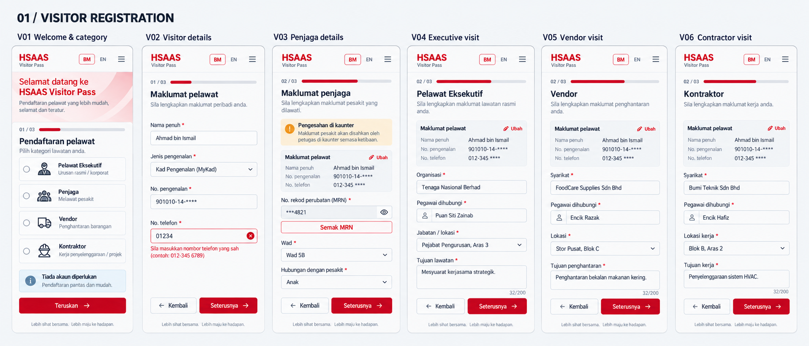
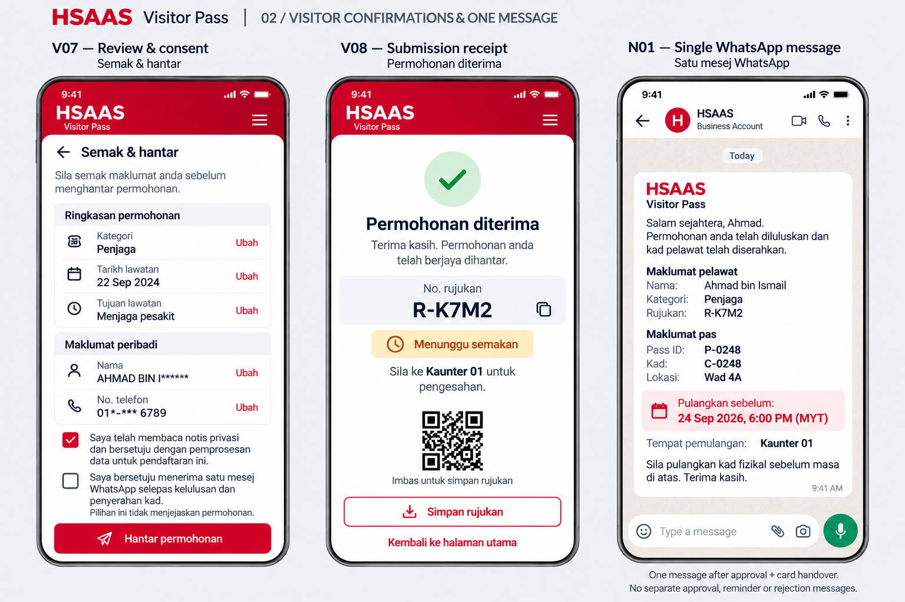
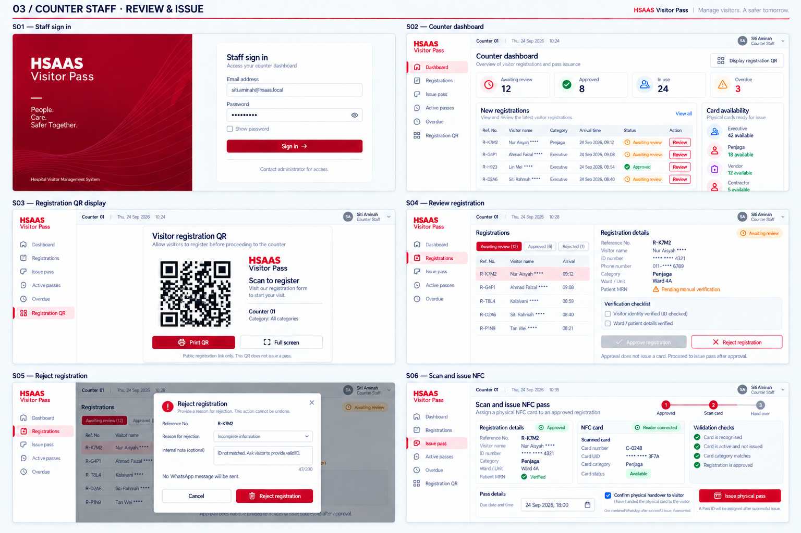
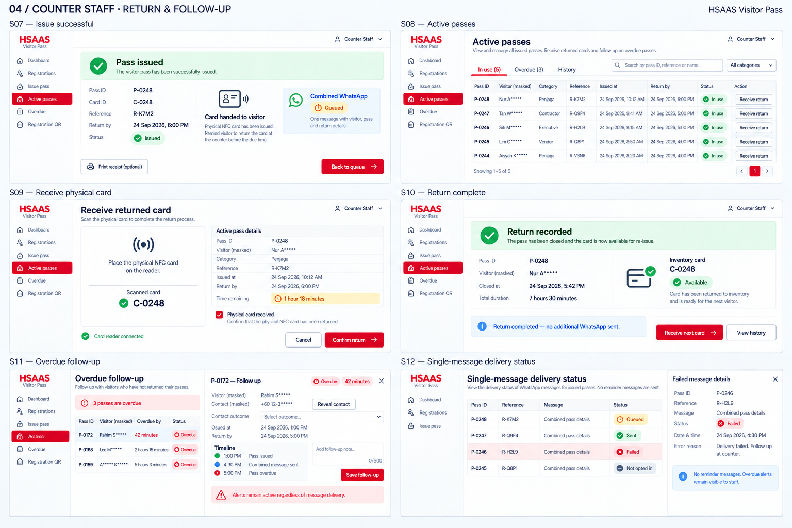
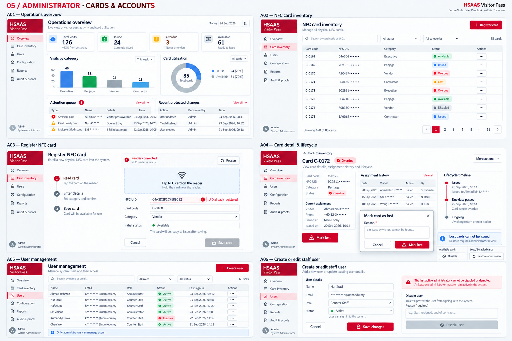
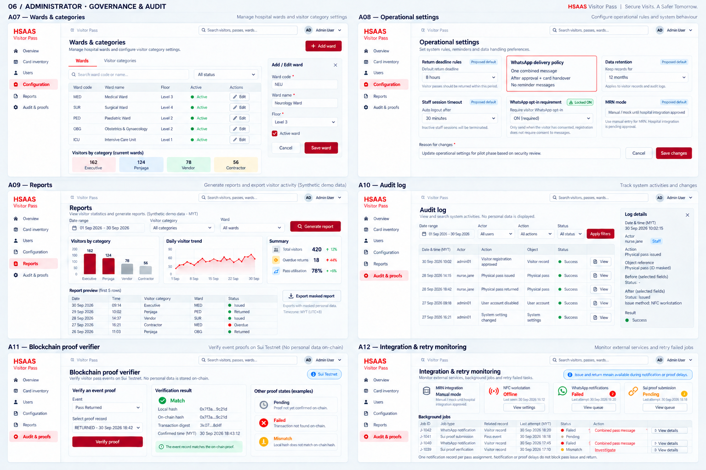
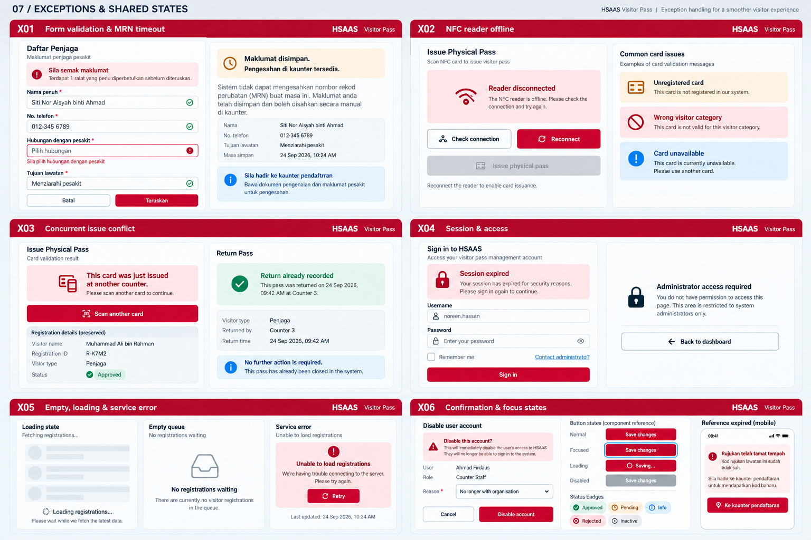

HSAAS UI v4 · 单封 WhatsApp01 / VISITOR REGISTRATION

页面与状态说明
- V01 · Welcome & category
BM: 'Pendaftaran pelawat', 'Pilih kategori'. Four radio cards: Pelawat Eksekutif, Penjaga, Vendor, Kontraktor. Counter 01 and 'Tiada akaun diperlukan'. Primary 'Teruskan'. - V02 · Visitor details
Step 1 of 3. 'Maklumat pelawat'. Nama penuh, Jenis pengenalan, No. pengenalan, No. telefon. One field shows clear inline validation. Back and 'Seterusnya'. - V03 · Penjaga details
Step 2 of 3. MRN, Wad, Hubungan dengan pesakit. Sample masked MRN ***4821. Amber 'Pengesahan di kaunter' and retained values. 'Semak MRN', 'Seterusnya'. - V04 · Executive visit
Step 2 of 3. 'Pelawat Eksekutif'. Organisasi, Pegawai dihubungi, Jabatan / lokasi, Tujuan lawatan. Restrained form, 'Seterusnya'. - V05 · Vendor visit
Step 2 of 3. 'Vendor'. Syarikat, Pegawai dihubungi, Lokasi, Tujuan penghantaran. 'Seterusnya'. - V06 · Contractor visit
Step 2 of 3. 'Kontraktor'. Syarikat, Pegawai dihubungi, Lokasi kerja, Tujuan kerja. 'Seterusnya'.
02 / VISITOR CONFIRMATION & ONE MESSAGE

页面与状态说明
- V07 · Review and consent
Required privacy acknowledgement; separate optional WhatsApp consent explicitly says one message after approval and physical card issue. Registration remains available without message consent. - V08 · Submission receipt
Public reference R-K7M2; waiting for review; go to Counter 01 for verification. No Pass ID or return deadline before issue. - N01 · Single combined WhatsApp
One greeting, visitor name/category/reference, Pass ID, card code, destination, return date/time in MYT, and return counter. Sent after approval AND successful issue, with consent. No IC, phone or MRN; no separate approval, reminder, rejection or return messages.
03 / COUNTER STAFF · REVIEW & ISSUE

页面与状态说明
- S01 · Staff sign in
Professional split layout: red brand panel with HSAAS wordmark and quiet line pattern, white 'Staff sign in' card with email, password, show password, Sign in, 'Contact administrator for access'. No public signup or role picker. - S02 · Counter dashboard
KPI cards: Awaiting review 12, Approved 8, In use 24, Overdue 3. New registrations table with category, arrival, status and Review. Card availability compact by category. 'Display registration QR' action. - S03 · Registration QR display
'Visitor registration QR'. Dominant illustrative QR on white card, Counter 01, HSAAS label, 'Scan to register'. Category All categories. Print and Full screen buttons. Caption 'Public registration link only'. - S04 · Review registration
Master-detail queue with R-K7M2 selected. Masked ID/phone/MRN; Penjaga, Ward 4A. MRN pending manual verification. Identity and ward verification checkboxes. 'Approve registration' and outlined 'Reject'. Label 'Approval does not issue a card'. - S05 · Reject registration
Reject registration with reason and internal note. No WhatsApp notification is sent. - S06 · Scan and issue NFC
Scan a registered, available, category-compatible NFC card for an approved registration; set due time and confirm handover. Successful issue creates Pass ID and queues the single combined message if consented.
04 / COUNTER STAFF · RETURN & FOLLOW-UP

页面与状态说明
- S07 · Issue successful
Issued Pass ID, card, reference and return deadline. The single combined WhatsApp is Queued/Sent/Failed/Not opted in independently of issue success. - S08 · Active passes
Tabs In use / Overdue / History. Search and category filter. Table Pass ID, category, reference, issued at, return by, status, action. Masked visitor labels. 'Receive return' action. - S09 · Receive physical card
Return screen with scan target, scanned card C-0248, active Pass P-0248, due and issue summary. Checkbox 'Physical card received'. Primary 'Confirm return', Cancel. Scan disconnected small recovery link. - S10 · Return complete
Assignment closed; inventory Available. No additional WhatsApp after return. - S11 · Overdue follow-up
Internal overdue alert, authorised contact reveal, contact outcome and follow-up timeline. No automatic reminder messages. - S12 · Message delivery status
One notification record per assignment. Rows are different passes; each has only Combined pass details and delivery status. No resend for Sent or unknown delivery; staff can view failed details and follow up.
05 / ADMINISTRATOR · CARDS & ACCOUNTS

页面与状态说明
- A01 · Operations overview
KPIs total visits 126, in use 24, overdue 3, available 61. Category bar chart, utilisation chart, attention queue and recent protected changes. Label charts with values; not red only. - A02 · NFC card inventory
Table card code, masked UID, category, status and action. Available, Issued, Overdue, Lost, Disabled labelled statuses. Search, status filter, 'Register card' primary. No inventory status called Returned. - A03 · Register NFC card
Centered enrollment form with reader Connected, tap card region, UID read, Card code, Category, initial Available state. Save card. Small inline example 'UID already registered' below UID on a duplicate example, save disabled while duplicate. - A04 · Card detail & lifecycle
Card C-0172, currently Overdue. Assignment history and lifecycle timeline. Action 'Mark lost' opens reason-required dialog. Available-card actions Disable and conditional Restore shown as separate contextual examples. Clear 'Lost cards cannot be issued'. Never normal-return a lost card. - A05 · User management
User table Name, Email, Role, Status, Last sign-in. Counter Staff and Administrator roles. 'Create user' button and edit action. Small note 'Only administrators can manage users'. - A06 · Create or edit staff user
Side panel Name, Email, Role select Counter Staff / Administrator, status Active, Save changes. Adjacent compact disable confirmation with reason. Protection banner 'The last active administrator cannot be disabled or demoted' and disabled protected action.
06 / ADMINISTRATOR · GOVERNANCE & AUDIT

页面与状态说明
- A07 · Wards & categories
Tabs Wards / Visitor categories. Ward code, name, floor, active, edit. Four visitor category cards Executive, Penjaga, Vendor, Contractor with category-specific field settings. Add/edit ward drawer. - A08 · Operational settings
Return rules, retention, session timeout, consent requirement and manual/mock MRN settings. Read-only WhatsApp policy: one combined message after approval and handover; no reminder scheduling. - A09 · Reports
Date range, category and ward filters. Visitors by category bars; daily trend; overdue and utilisation summary. Preview table; Export masked report. Synthetic demo data label, timezone MYT. - A10 · Audit log
Filter actor/action/date/status. Audit table with registration approved, issued, returned, user disabled and setting changed. Detail drawer actor, time, object reference, before/after safe values. No raw personal data. - A11 · Blockchain proof verifier
Sui Testnet badge. Selected RETURNED event proof: local hash vs on-chain hash, transaction digest abbreviated, confirmed time, green 'Match'. Verify proof button. Also compact states Pending, Failed and Mismatch distinctly labelled. No personal data on-chain. - A12 · Integration & retry monitoring
MRN, NFC, WhatsApp and Sui health. WhatsApp failures expose details; Sui proofs may be retried separately. One notification record per assignment; issue/return remain independent.
07 / EXCEPTIONS & SHARED STATES

页面与状态说明
- X01 · Form validation & MRN timeout
Mobile Penjaga form with top 'Sila semak maklumat' linked error summary, one missing required field inline error. Separate amber MRN timeout 'Maklumat disimpan. Pengesahan di kaunter tersedia'. Retain entered values; continue to manual verification. - X02 · NFC reader offline
Issue screen warning 'Reader disconnected'. Clear Reconnect and Check connection actions, disabled Issue physical pass. Separate small chips explaining unregistered card, wrong category, card unavailable. No bypass issue button. - X03 · Concurrent issue conflict
Issue modal banner 'This card was just issued at another counter'. Clear 'Scan another card' action, approved registration preserved. Adjacent small already-returned informational state 'Return already recorded', no duplicate return action. - X04 · Session & access
Sign-in card with 'Session expired. Sign in again'. Additional compact access-denied panel 'Administrator access required' and 'Back to dashboard'. No account signup, no privilege escalation. - X05 · Empty, loading & service error
Three clearly labelled mini-panels within one frame: queue skeleton with Loading label; empty queue 'No registrations waiting'; service failure 'Unable to load registrations' with Retry and last-updated time. Do not present zero as loaded data on failure. - X06 · Confirmation & focus states
Real account-disable confirmation with reason and Cancel / Disable account. Separate tiny component strip normal, focused, loading, disabled buttons, visible focus ring, success/warning/error labelled badges. Separate reference-expired mobile notice directing visitor to counter; no personal-data leak.